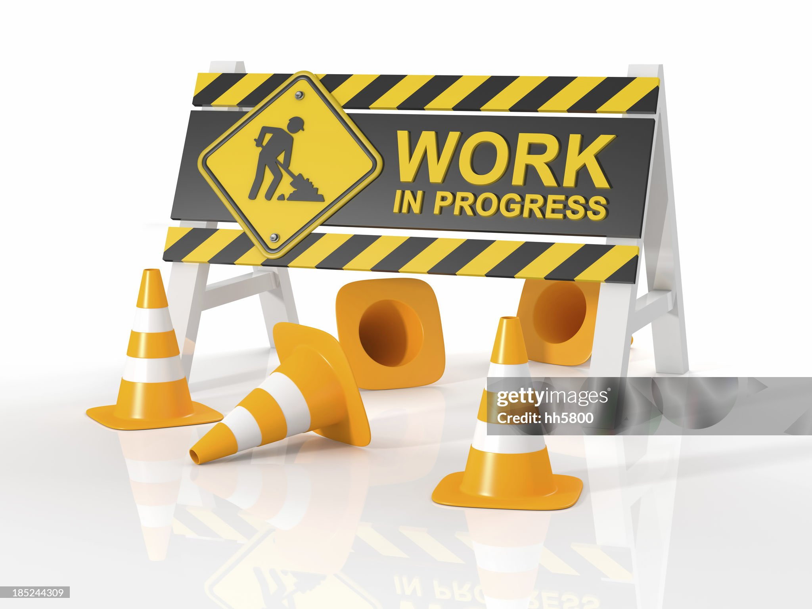
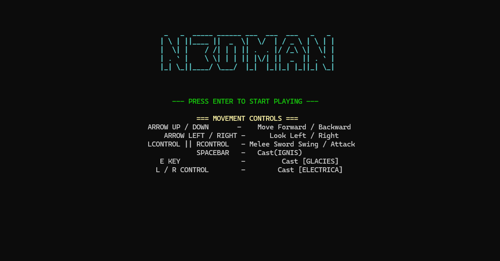
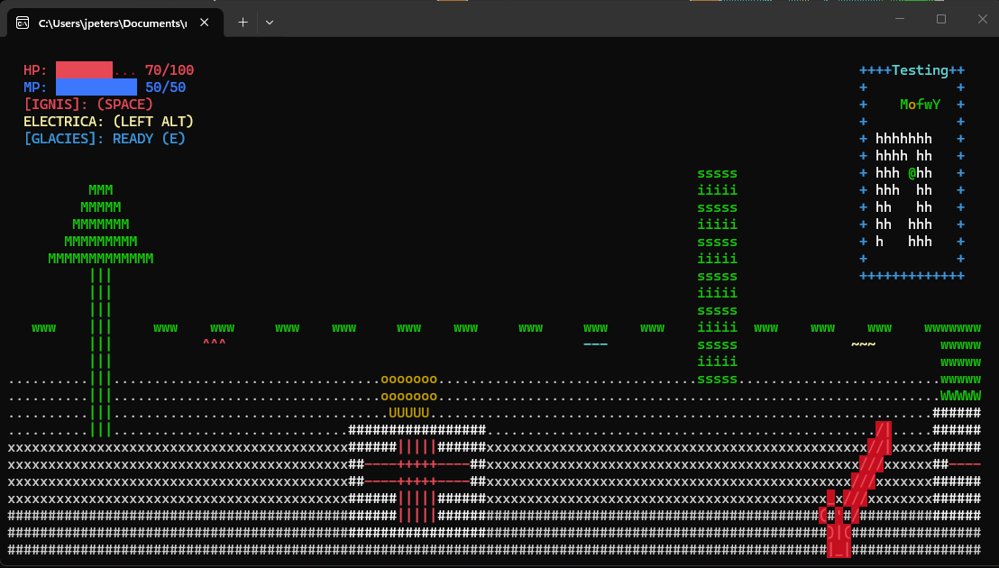
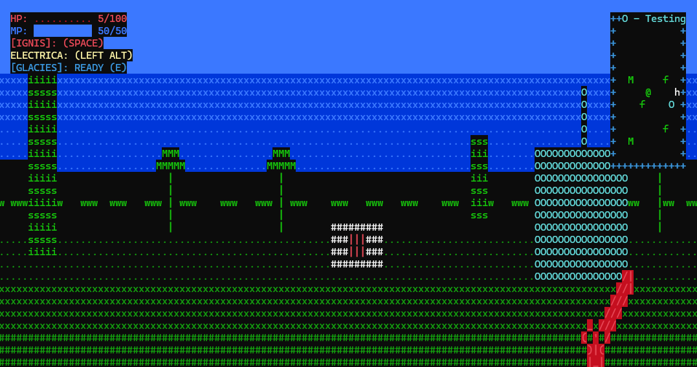
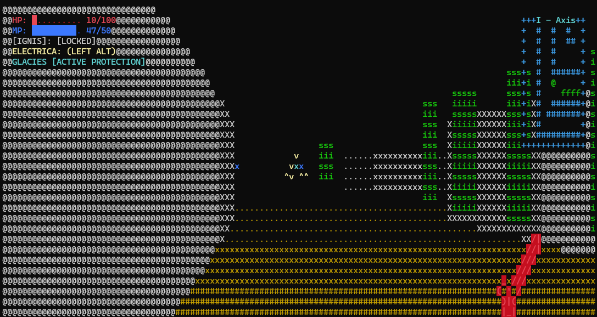
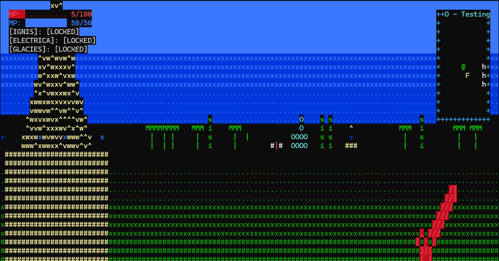

Version History
Brief rundown of the progress made thus far. Please email nedman2000@proton.me for a request, or just in general!
Build 0.1: Got the first standalone executable. It consisted of a super basic map, walls, and the ability to move
Build 0.2: Huge improvements! Got fluid motion, added the first few plant sprites, increased the map size substantially, added the sword, built in loading maps from files, and added the minimap.
Build 0.3: Added more plants, the fireball, lightning bolt, and frost shield spells, added scrolls to activate the spells, added health and mana bars, added health packs, built and implemented simple audio engine, added sound effects to most things including walking, swinging sword and casting spells, hitting things with spells or the sword.
Build 0.4: Added the mana potion powerup, added portal network for maps, added logic for maps and ceiling/floor rendering so outside maps have green floors and blue ceilings, changed the lightning bolt from a sphere to a crackle, implemented WASD controls, added title screen, changed the lamp, mana bottle and health pack sprites, changed the mana bottle function, lowered the footstep volume, changed the health pack healing amount, enabled permanent objection collection so transfering maps there is persistent item removal, added firepits that damage the player on contact and is negated by Glacies.
SCREENSHOTS






DOWNLOAD N3DMAN
SELECT YOUR OS